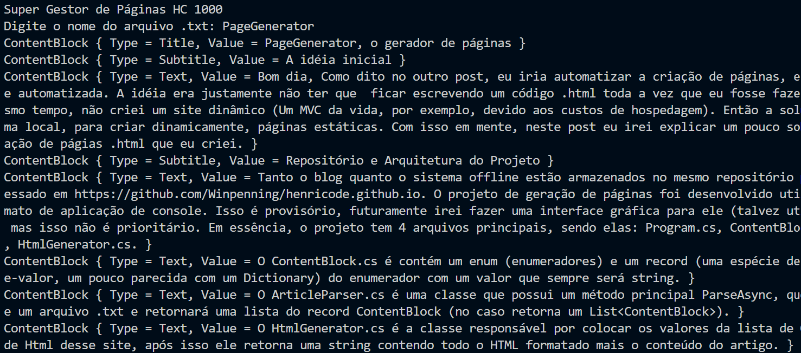
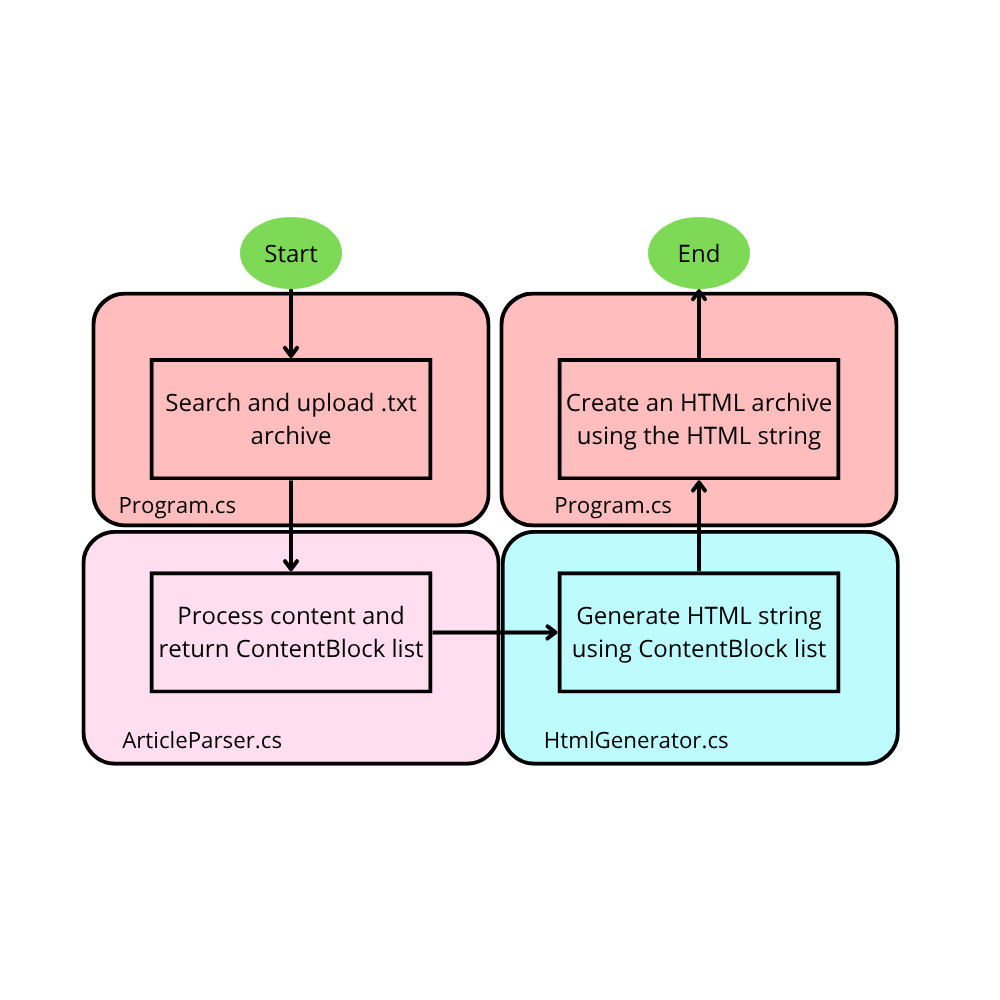

A idéia inicial
Bom dia, Como dito no outro post, eu iria automatizar a criação de páginas, e esta é a primeira quase automatizada. A idéia era justamente não ter que ficar escrevendo um código .html toda a vez que eu fosse fazer um novo artigo. Ao mesmo tempo, não criei um site dinâmico (Um MVC da vida, por exemplo, devido aos custos de hospedagem). Então a solução foi criar um sistema local, para criar dinamicamente, páginas estáticas. Com isso em mente, neste post eu irei explicar um pouco sobre o sisteminha de geração de págias .html que eu criei.
Repositório e Arquitetura do Projeto
Tanto o blog quanto o sistema offline estão armazenados no mesmo repositório público que pode ser acessado em https://github.com/Winpenning/henricode.github.io. O projeto de geração de páginas foi desenvolvido utilizando .NET 10, no formato de aplicação de console. Isso é provisório, futuramente irei fazer uma interface gráfica para ele (talvez utilizando o Electrum JS) mas isso não é prioritário. Em essência, o projeto tem 4 arquivos principais, sendo elas: Program.cs, ContentBlock.cs, ArticleParser.cs, HtmlGenerator.cs.
O ContentBlock.cs é contém um enum (enumeradores) e um record (uma espécie de estrutura de dado chave-valor, um pouco parecida com um Dictionary) do enumerador com um valor que sempre será string.

O ArticleParser.cs é uma classe que possui um método principal ParseAsync, que irá pegar o caminho de um arquivo .txt e retornará uma lista do record ContentBlock (no caso retorna um List<ContentBlock>).
O HtmlGenerator.cs é a classe responsável por colocar os valores da lista de ContentBlock no modelo de Html desse site, após isso ele retorna uma string contendo todo o HTML formatado mais o conteúdo do artigo.
Fluxo de Execução do Sistema
Primeiramente a função Main da clesse Program.cs chama o ArticleParser.cs que irá pegar o arquivo txt, processá-lo, retornando uma lista de ContentBlock. Após isso ele pegará a ista de ContentBlock e irá passá-la como parâmetro para um método dentro da classe HtmlGenerator, esse método irá retornar a string contendo todo o html. Após isso, o Program irá salvar esse string em um novo arquivo html, e assim, teremos a nova página.
